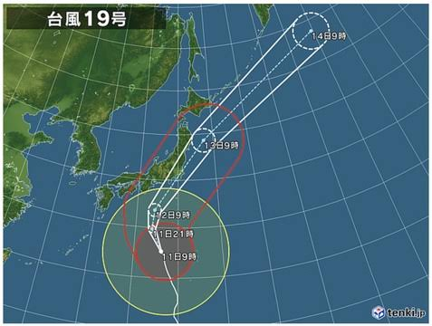

台風１９号、死者７０人超に インフラ寸断、影響長期化
 この台風によって東北や関東など広い範囲で浸水したが、各地で水が引き始め、確認される犠牲者の人数が増えている。１５日は新たに福島県いわき市が、救助中の死者も含めて７人が死亡したと発表。１５日夜までの朝日新聞の集計によると、福島県内の死者数は計２７人に上った。宮城県と神奈川県でそれぞれ１４人が死亡したほか、栃木県や群馬県、長野県、埼玉県など各地で死者が確認されている。東京都日野市でも、水が引いた多摩川の河川敷で男性の遺体が見つかった。ほかにも、福島県で４人、神奈川県と長野県で各３人など、計６県で行方不明者がいる。生存率が著しく下がるとされる「発生から７２時間」が１６日にかけて迫るなか、相模原市の土砂崩れ現場など、自衛隊も加わっての捜索活動が進んでいる。
家屋被害については、千曲（ちくま）川の堤防が決壊した長野県で少なくとも２２３７棟、阿武隈川の堤防が決壊した福島県で７５３棟が床上浸水した。東日本全体では、床上浸水が１万２９８棟、床下浸水が１万１５５４棟に上った。福島や長野、宮城など、１３都県で計４７７５人がなお避難を続けている。
河川の堤防も、新たに高倉川（宮城県）や藤田川（福島県）などで決壊が確認された。国管理の２４河川、都道府県管理の２０７河川で水が堤防を越えて浸水したほか、土石流やがけ崩れなどの土砂災害も埼玉や静岡など１９都県の１７０カ所に上っている。
水道や電気などライフラインにも深刻な影響が出ている。
厚生労働省によると１５日午後２時現在、１２都県で少なくとも計約１２万８千戸で断水が続いている。広域の冠水や浄水場・ポンプ場の水没などにより、福島県いわき市で約４万５千戸、茨城県常陸大宮市で約１万３千戸が断水している。
停電も各地で続いており、経済産業省によると１５日午後２時現在、関東甲信と東北の１０都県の計約３万３千戸で停電。千葉県で約１万６千戸、長野県で約１万１千戸が停電している。
中央道などの高速道路や、北陸新幹線やＪＲ中央線といった鉄道も一部区間で寸断されており、それぞれ復旧作業が進められている。